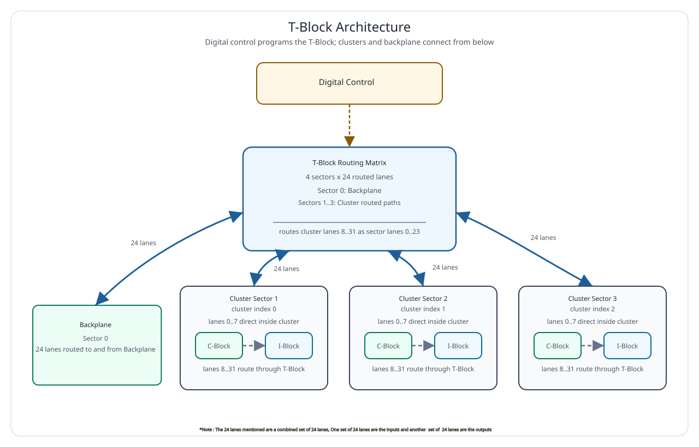

T-Block¶
The T-Block is the topology switch inside an mREDAC. It decides whether a routed lane stays inside the mREDAC, moves between clusters on the same mREDAC, or enters/leaves the backplane. Unlike the T-Block BPL, which is part of the backplane and is instantiated in three 8-lane sections, the local T-Block is a single mREDAC-mounted routing block.
The T-Block sits between the C-Block output side and the I-Block input side for the routed part of the signal path. For each routed lane, the T-Block selects which sector provides the signal for a selected destination sector. This makes it possible to route signals from one cluster sector to another cluster sector, from a cluster sector to the backplane, or from the backplane into a cluster sector.
Routing Sectors¶
| Sector | Meaning | Routed lanes |
|---|---|---|
| 0 | Backplane | 24 |
| 1 | Cluster 0, corresponding to cluster index 0 | 24 |
| 2 | Cluster 1, corresponding to cluster index 1 | 24 |
| 3 | Cluster 2, corresponding to cluster index 2 | 24 |
Each routed lane has one entry for each destination sector. The selected source sector defines where the destination sector receives that lane from. At the architecture level, this can be read as a four-sector, 24-lane routing matrix.
Signal Architecture¶
The functional signal path consists of three main parts:
- The three mREDAC clusters provide the local cluster-side routed lanes.
- The backplane path provides the external routed lanes used to communicate beyond the local mREDAC.
- The T-Block routing matrix selects which sector is connected to each destination sector for each routed lane.
The 24 routed lanes correspond to signal lanes 8..31 at the cluster level. Signal lanes 0..7 are not routed through the T-Block for general topology switching; they remain directly connected locally between the C-Block and I-Block. This is why the C-Block exposes 32 signal lanes, but only 24 of them are part of the T-Block topology routing path.
The signal flow through the T-Block should be understood as a configurable endpoint connection. A route may connect a cluster lane to another cluster lane, a cluster lane to the backplane, or the backplane to a cluster lane. The selected route defines the active source for the selected destination lane.
Routing Model¶
The T-Block uses four routing sectors. Sector 0 is the backplane path and sectors 1,2, 3 are the three mREDAC clusters. For every routed lane, the T-Block can select one of these four sectors as the source for a destination sector.
For cluster-to-cluster routing on the same mREDAC, the T-Block connects the selected lane from the source cluster sector to the destination cluster sector. The lane number must match on both sides of the route.
For mREDAC-to-backplane routing, the local T-Block connects the selected cluster lane to sector 0. A backplane routing element can then continue the route beyond the local mREDAC.
For backplane-to-mREDAC routing, the local T-Block connects sector 0 to the destination cluster sector. This allows a signal arriving from the backplane path to enter the selected cluster lane.
Important
- The T-Block handles the routed topology lanes only. The first 8 cluster signal lanes are directly connected locally and are not general T-Block topology routes.
- The signals use the same lane numbers throughout, There is no possibility to switch between lane numbers in T-Block.
Lane Structure¶
Each cluster has 32 signal lanes. The T-Block is responsible for the routed subset:
- Cluster signal lanes 0..7 are locally connected and bypass the T-Block topology matrix.
- Cluster signal lanes 8..31 are routed through the T-Block.
- Inside the T-Block, those routed lanes are addressed as local sector lanes 0..23.
The conversion between a cluster signal lane and a T-Block sector lane is:
For example, cluster signal lane 8 is T-Block sector lane 0, and cluster signal lane 31 is T-Block sector lane 23.
Control Architecture¶
The routing matrix is controlled digitally. The control state stores the selected source sector for each destination sector and sector lane. Changing a route updates the mux-control state for the affected destination sector and lane.
The default routing state connects each destination sector to the same-numbered source sector. In other words, the backplane sector defaults to the backplane sector, cluster sector 1 defaults to cluster sector 1, cluster sector 2 defaults to cluster sector 2, and cluster sector 3 defaults to cluster sector 3 for each routed lane. Route programming changes these selections where a topology connection is required.

Example Signal Flow¶
A typical cluster-to-cluster route on the same mREDAC follows this path:
- A route is requested for one of the routed cluster signal lanes, 8..31.
- The cluster lane is converted to a T-Block sector lane by subtracting 8.
- The source cluster is mapped to its source sector.
- The destination cluster is mapped to its destination sector.
- The T-Block connects the destination sector lane to the selected source sector.
A typical mREDAC-to-backplane route follows this path:
- A source cluster drives one of the routed signal lanes, 8..31.
- The local T-Block connects the source cluster sector to sector 0.
- The signal leaves the local mREDAC through the backplane path.
A typical backplane-to-mREDAC route follows this path:
- A signal arrives at the local mREDAC from the backplane path.
- The local T-Block connects sector 0 to the destination cluster sector.
- The signal enters the selected cluster through the corresponding routed lane.
Programming with pybrid¶
In pybrid, the mREDAC-mounted T-Block is exposed on the carrier as tblock. Since there is only one T-Block per mREDAC carrier, no section selection is needed.
The relevant functional calls are:
connect(src_sector, dst_sector, sector_lane) configures one routed lane inside the local T-Block. src_sector selects the source endpoint, dst_sector selects the destination endpoint, and sector_lane is the local T-Block lane number from 0 to 23.
The current source selection for a destination can be read back with:
The T-Block can be reset with:
When using a cluster signal lane number, convert it to the local T-Block lane number first:
The sector numbers used by pybrid are:
| Sector | pybrid value |
|---|---|
| Backplane | 0 |
| Cluster 0 | 1 |
| Cluster 1 | 2 |
| Cluster 2 | 3 |
For example, to route cluster 0 lane 8 to cluster 1 lane 8 on the same mREDAC:
For a route from cluster 0 lane 31 to the backplane path:
For a route from the backplane path into cluster 2 lane 16:
The higher-level router can also configure the T-Block from source and destination locations:
For local cluster-to-cluster routes and backplane-related routes, the lane number must stay the same at the source and destination. Routes for lanes 0..7 are not general T-Block routes.
In this router example, src_cluster and dst_cluster are zero-based cluster indices, while lane is the cluster signal lane number in the routed range 8..31. The router maps the cluster indices to T-Block sectors internally and converts the cluster lane to the local sector lane.
Design Notes¶
- A single T-Block is mounted on each mREDAC carrier.
- The T-Block routes the 24 topology lanes between the backplane sector and the three cluster sectors.
- The first 8 cluster signal lanes are direct local connections and are not part of the T-Block topology matrix.
- The T-Block is a routing module, not a signal-conditioning module. The documentation should not be read as adding amplification, conversion, or termination behavior unless those functions are explicitly part of the hardware design.
- The board depends on both analog routing and digital control. A correct route requires both a valid signal path and a valid mux-control state.